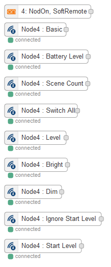

Z-Wave Remote
The Nodon Soft Remote
Install Z-Wave Stuff
First, you need to buy Z-Wave USB Key that you should plug on the pi in any USB available port and some sofware easy to install using the import node menu, as described in the Z-Wave introduction tutorial.
Get the Z-Wave Soft Remote
Nodon Soft Remote
Reset to factory defaults
A factory reset will completely delete the memory of the Soft Remote and restore all the parameters to default value. A simultaneous long press (1sec) on Off (button 3) and Minus (button 4) will perform this factory reset.
The LED will blink red and green to validate the reset
Adding to the Z-Wave key
To add the device into a Z-Wave key:
- Unplug the Z-Stick Gen5 and set it into the learning mode by pressing its action button (it blinks blue).
- Simultaneously push on “ON” (button 1) and “PLUS” (button 2), during 1sec. The LED glows in pink to confirm the selection
- Then push on “ON” (button 1), within 10 seconds. The LED blinks in pink to confirm your choice
- The LED blinks in green to confirm the procedure
- Plug the key back and reboot
Nodes in the visual editor
In the Z-Wave tab you can now find the dedicated nodes, one for each functionality:

Press the activate button to store the nodes after they are here.
The most useful one is the orange one, used to get the command from the remote.
Beware that it may takes minutes before the nodes to appear. Pressing the remote buttons may help.
Use the remote
You can directly wire a switch:
This node understand intents and thus can be juste wired to another nodes that also understands intents.